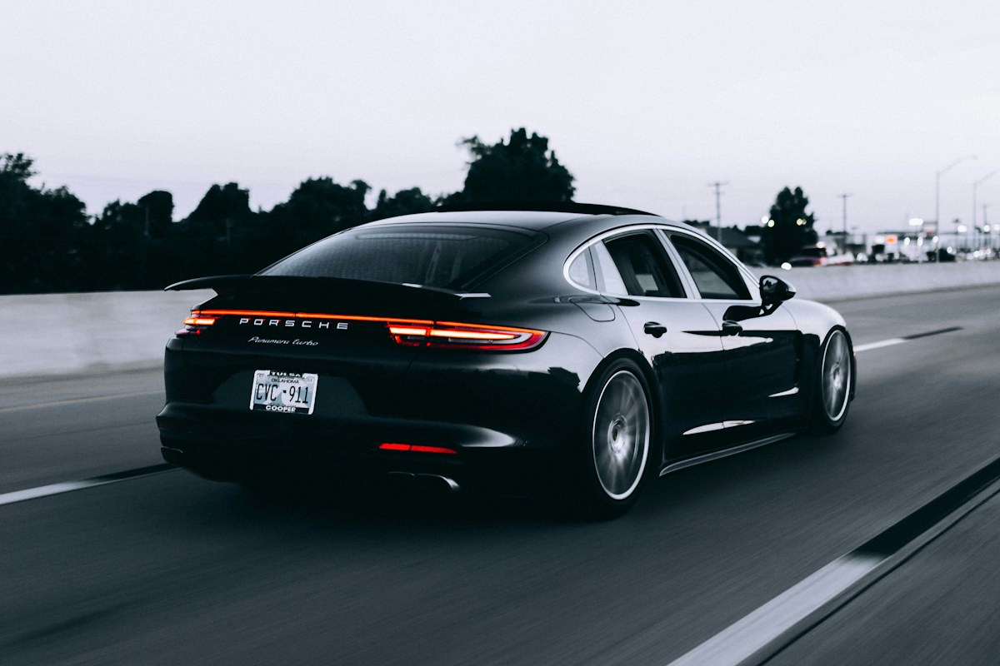
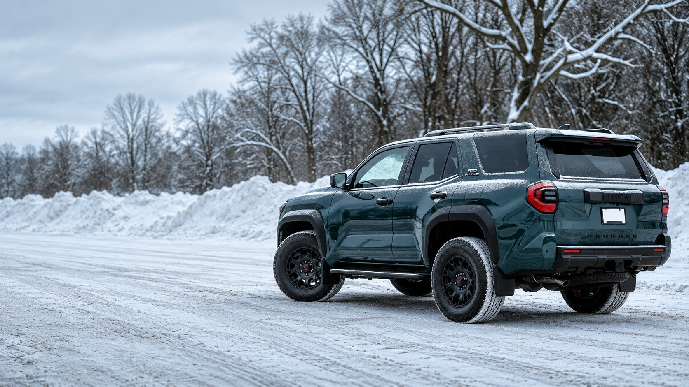
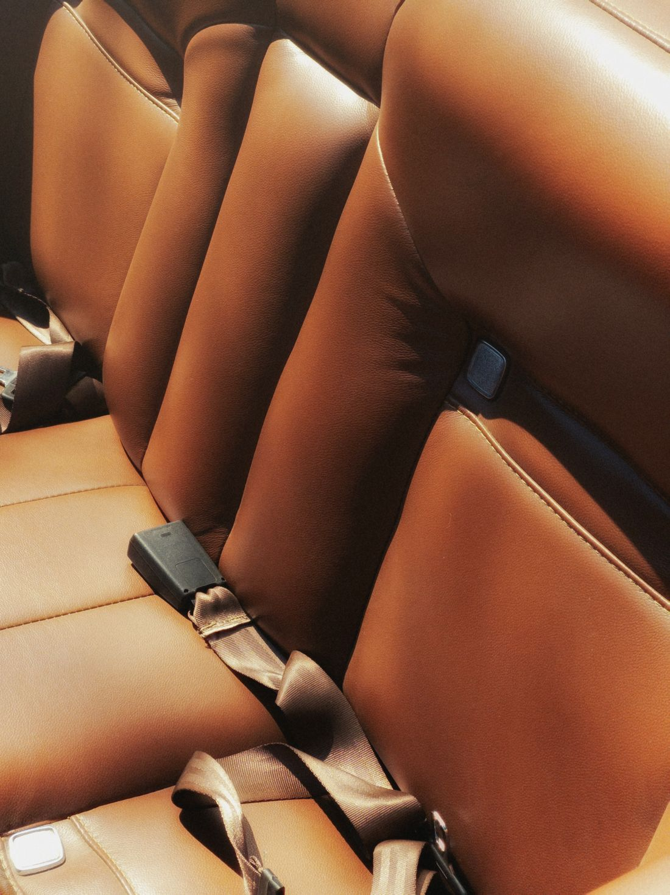
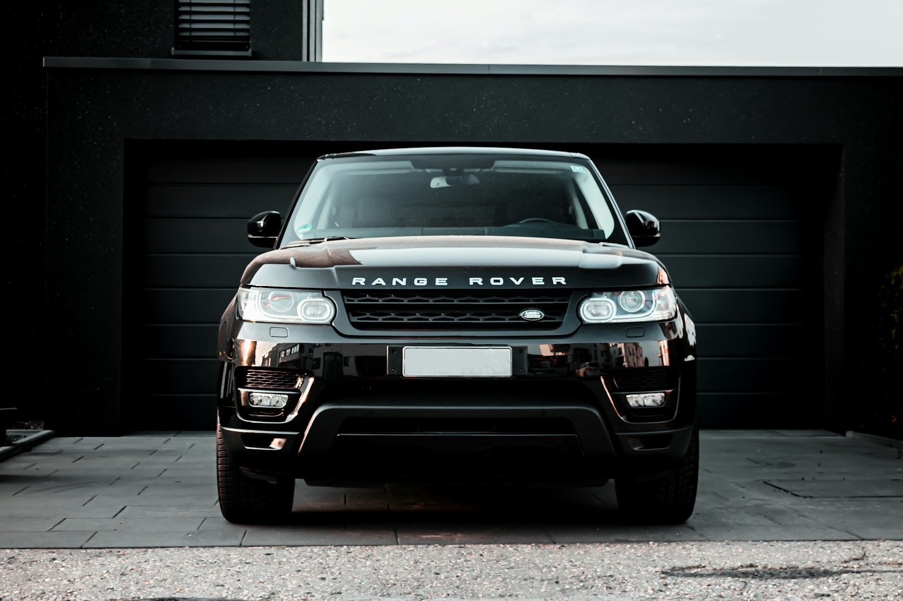
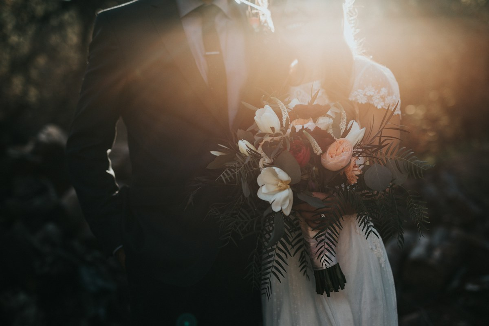
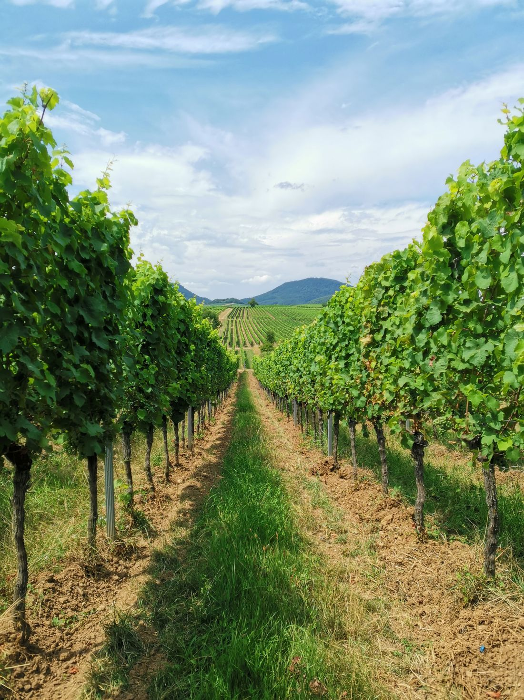
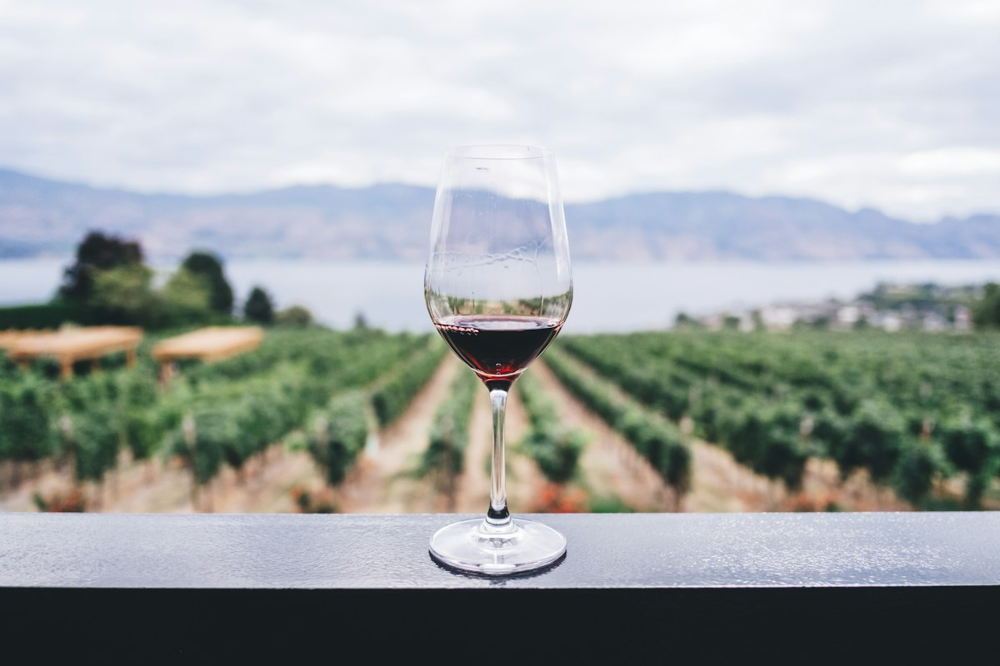
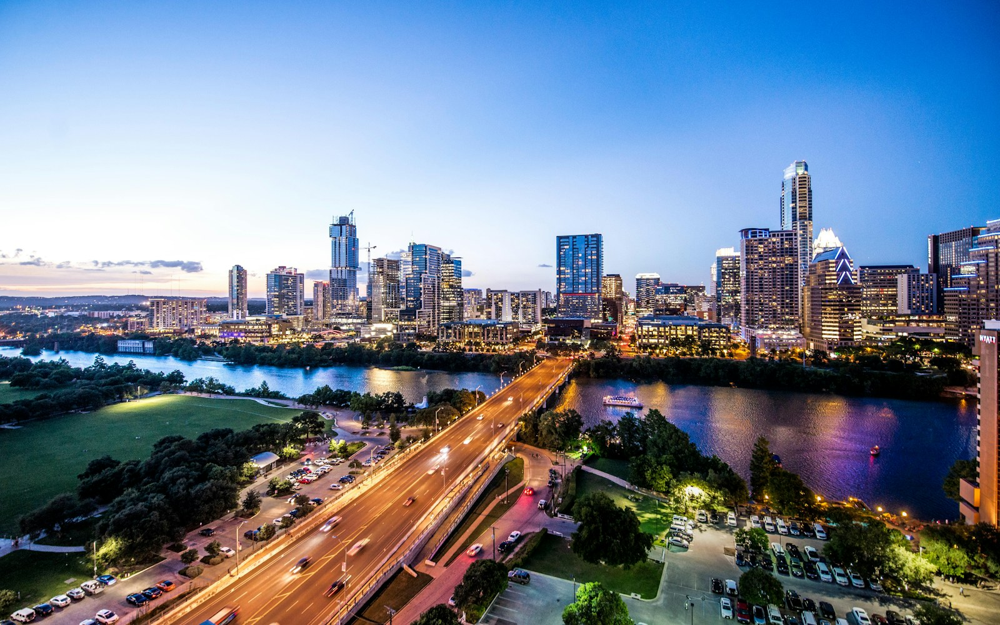

A seamless beginning
Airport transfers
Move between the airport and your next destination with a pickup planned around your itinerary.
Arrange your transfer
Private travel. Personally considered.
A more refined way to move. Private chauffeur journeys and curated experiences in Austin and the Texas Hill Country.
Welcome to Luxury
Some journeys deserve more than a destination.
The quiet before an important meeting. The first moment of a celebration. An unhurried afternoon in wine country. We believe the way you travel should be as memorable as the reason you set out.
With thoughtful planning and a personal approach, Luxury brings comfort, care and a sense of occasion to every mile.
Discover our philosophy
Tailored to your moment
For the everyday that deserves better, and the days you’ll never forget. Discover private travel shaped around you.

A seamless beginning
Move between the airport and your next destination with a pickup planned around your itinerary.
Arrange your transfer
Make the right impression
A considered approach to executive journeys, client arrivals and travel between important meetings.
Plan business travel
For life’s defining moments
Bring your wedding, private event or special evening together with thoughtfully coordinated travel.
Make it an occasion
Take the scenic route
Discover a vineyard, linger over lunch or explore the city with a private itinerary built around your interests.
Create your escapeThe Luxury difference
True luxury is a feeling. The space to settle in, the freedom to be present, and the reassurance that the details have been considered.
A considered itinerary, with pickup details and timings discussed before you travel.
Your preferences, your occasion, your pace. An experience that begins with listening.
A comfortable setting to reset between destinations and enjoy the journey itself.
A thoughtful starting point for discovering Austin and the Texas Hill Country.
Beyond the destination
A taste of the Hill Country. An exceptional table. A night with no ordinary ending. Explore our destination guides and find your next moment.

Unhurried afternoons

A seat at the table

When the city comes alive
Prefer a more laid-back afternoon?
Discover our brewery guideGuest reflections
Our wedding transport was elegant and punctual. The drivers were professional and friendly.
I booked them for a corporate event. Luxury vehicles, discreet drivers — exactly what I needed.
Exceptional service. The attention to detail makes every ride memorable.
Your next chapter
A destination in mind, or just the beginning of an idea? Share a few details and let’s shape a journey around you.
For event planning or a more involved itinerary, get in touch with our team.